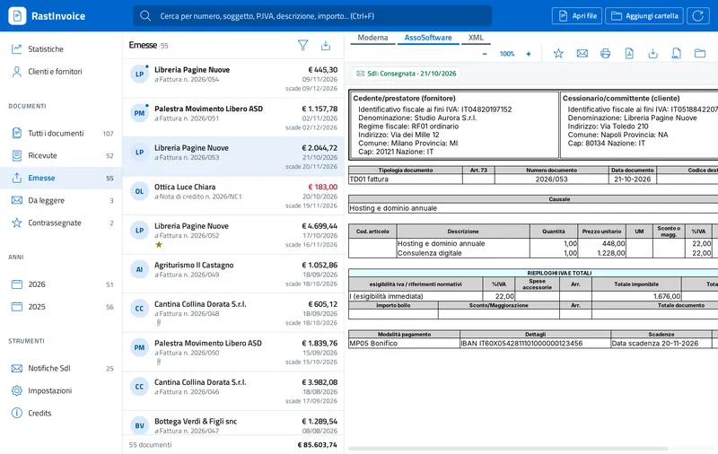

Come aprire un file .xml.p7m della fattura elettronica
Il file .xml.p7m è una fattura elettronica firmata digitalmente: il file XML è racchiuso in una busta crittografica in formato CAdES. Per leggerlo bisogna estrarre l'XML dalla busta e poi visualizzarlo. RastInvoice fa entrambe le cose in un passaggio e verifica anche la firma.
I passi
- Scarica RastInvoice. È gratuito su Windows e Linux e costa 2,99 € sul Mac App Store. Non servono programmi di firma come Dike o ArubaSign.
- Apri il file .p7m. Fai doppio clic sul file, trascinalo nella finestra o usa Apri file. Vanno bene anche file in base64, con più firme annidate, dentro archivi ZIP o email PEC.
- Controlla la firma. L'anteprima indica se la firma è integra e chi ha firmato. Il documento originale non viene modificato.
- Salva l'XML o il PDF. Puoi salvare l'XML estratto dalla busta, oppure creare il PDF della fattura in formato A4.

Perché la fattura arriva in formato P7M
La firma digitale è obbligatoria per le fatture verso la Pubblica Amministrazione ed è facoltativa tra privati.
Molti programmi di fatturazione la applicano comunque, quindi chi riceve fatture via PEC o le scarica dal
cassetto fiscale trova spesso file .xml.p7m invece di .xml.
Cosa verifica RastInvoice
- Integrità del documento: il contenuto non è stato modificato dopo la firma
- Firmatario: nome e dati del certificato di firma
- Formati DER, BER e base64, anche con più firme annidate
La verifica della catena di certificazione e della revoca del certificato è in programma: per una verifica con valore legale resta valido il servizio dell'ente certificatore.
Domande frequenti
Serve Dike per aprire un file P7M?
No. RastInvoice estrae e mostra la fattura senza programmi di firma.
Posso aprire i P7M ricevuti via PEC?
Sì: RastInvoice apre direttamente il messaggio .eml della PEC e legge le fatture allegate, anche dentro archivi ZIP.
Il file originale viene modificato?
No. RastInvoice legge il file e non lo modifica mai.